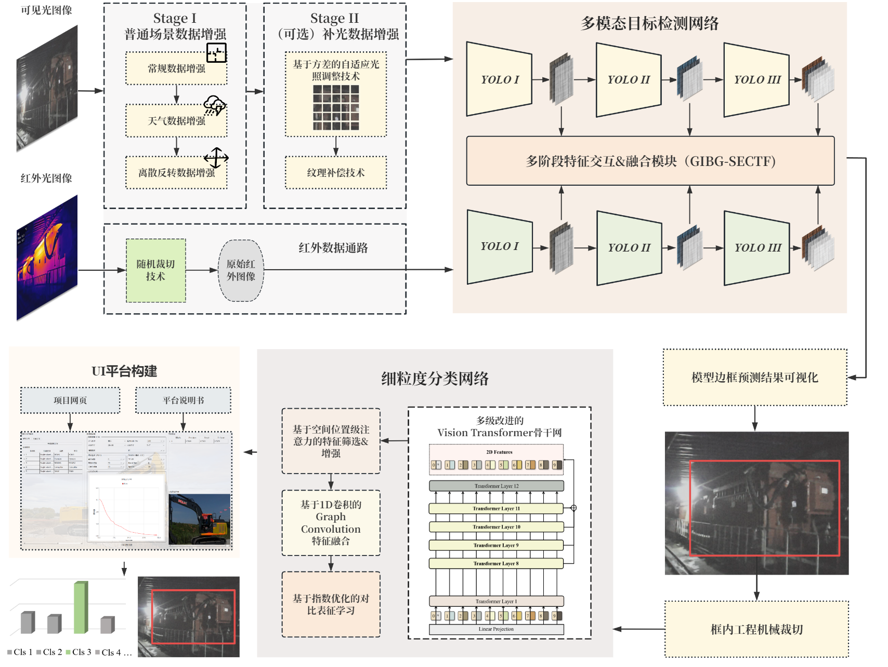

多模态融合的工程机械细粒度识别系统：
面向新质生产力的多场景精细化工程管理解决方案
Visible & Infrared Dual‑Modal Fine‑Grained Recognition across Diverse Scenes
负责人：高天宇小组成员：李世龙 杜昀瑾学院：四川大学电气工程学院/化学工程学院日期：2025‑04
项目信息
| 项目名称 | 负责人 | 完成时间 | 项目状态 |
|---|---|---|---|
| 多模态融合的工程机械细粒度识别系统UI平台 | 李世龙 | 2025-04 | 进行中 |
| 可见光与红外图像融合 | 高天宇 | 2025-04 | 已完成 |
| 细粒度分类算法 | 高天宇 | 2025-04 | 已完成 |
相关链接
摘要
本项目聚焦新质生产力发展，通过多模态融合与细粒度分类技术提升工程管理的智能化水平。针对矿井、黑夜等低光环境，采用针对性数据增强，并使用基于多模态可见光与红外图像结合的Cross Transformer改进方法，增强特征提取能力。将目标定位后，使用基于ViT骨干网络设计ABFS和ECL模块，实现工程机械品牌与型号的高精度识别。项目创新性提出多阶段数据增强策略，结合自适应MSRCR与CLAHE算法优化低光场景下的检测性能。项目成果在细粒度分类与目标检测任务中均超越现有先进方法，并利用Grad-CAM技术增强模型可解释性，促进人机信任。应用场景覆盖常规工地、极端天气及地下工程，助力机械调度、设备维护与安全监控。相关研究已投稿至SCI一区期刊，并开发了用户友好的UI系统，推动AI驱动的工程管理精准化与可持续发展。
可见/红外 联合目标识别与分类 视频演示
媒体演示与流程图

图1: 项目技术流程图，结合Cross Transformer和细粒度方法实现可见光与红外图像的特征级融合与联合分类判别，同时使用可解释性技术提升人机交互。项目基于此开发了UI平台，演示如下。
视频1: 用户界面交互演示，支持参数配置、数据上传与实时推理结果可视化